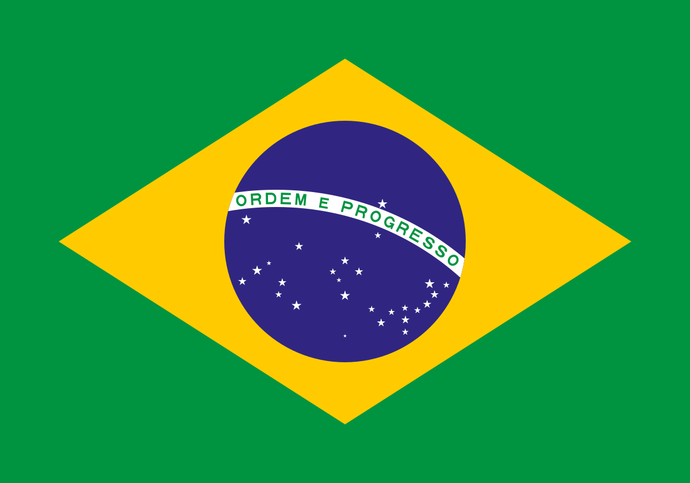

No final do século XV, quando do Tratado de Tordesilhas, toda a área hoje conhecida como Brasil era habitada por comunidades seminômades que subsistiam da caça, pesca, coleta e agricultura. A história do Brasil é dividida em períodos, sendo os mais tradicionais: Pré-Descobrimento (até 1500), Colônias (1500 a 1822), Império (1822 a 1889), República (de 1889 aos dias atuais).
O futebol é o desporto mais popular no Brasil, com milhões de adeptos de todas as idades. É o desporto mais assistido, atraindo multidões aos estádios e milhões de espectadores para cada partida.
A história da culinária brasileira é uma jornada fascinante que reflete a diversidade cultural e geográfica do país. Desde as suas raízes indígenas até as influências trazidas pelos colonizadores europeus, africanos escravizados e imigrantes asiáticos, a cozinha brasileira é, portanto, uma fusão rica de tradições culinárias que continua a evoluir.
O Brasil é o único país da América que tem a Língua Portuguesa – herança dos nossos colonizadores lusitanos – como idioma oficial. Isso significa que, por aqui, o Português é usado para estabelecer todas as relações entre os cidadãos e o Estado.
Há três tipos de clima no país: equatorial, tropical e temperado. O clima equatorial abrange boa parte do país, englobando principalmente a região da Floresta Amazônica, onde chove quase diariamente e faz muito calor. Já o clima tropical varia de acordo com a região, mas também é quente e com chuvas menos regulares.
A religião predominante no Brasil é o cristianismo, com cerca de 60 a 70% da população a ser católica e 20 a 30% a ser evangélica. As outras religiões, como o espiritismo, o umbanda, o candomblé e outras religiões afro-brasileiras, representam menos de 3% da população.